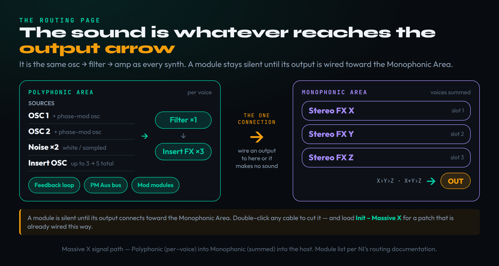
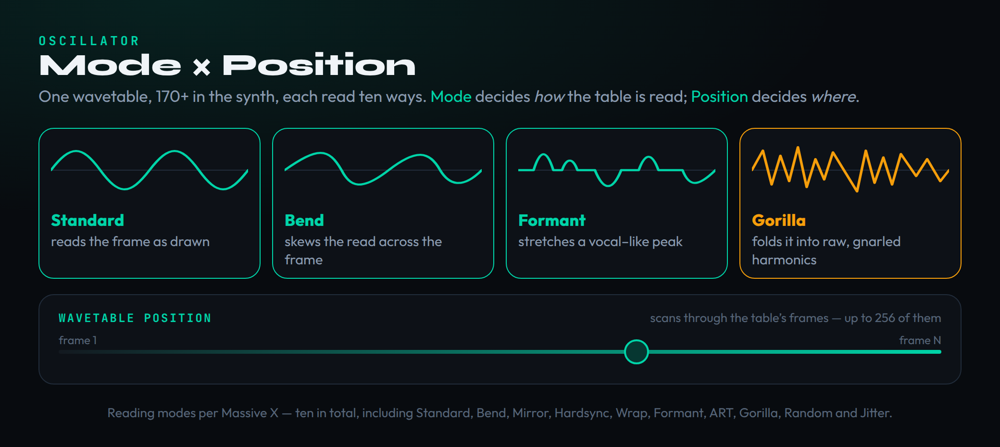
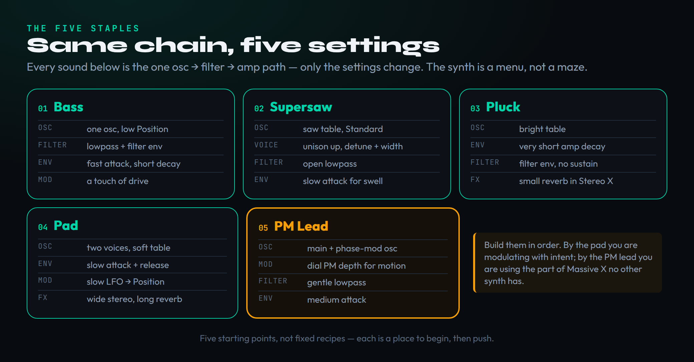

Open Massive X for the first time and the reaction is almost universal: you land on a dark panel criss-crossed with cables and little arrows, you cannot find the one knob that makes a sound, and you quietly close it and go back to whatever synth you already understand. That panel is the Routing page, and it is the single reason this synth has a reputation for being hard — not because the sound engine is exotic, but because Native Instruments chose to show you the wiring that most synths hide. The irony is that underneath the cables Massive X is the same oscillator → filter → amplifier instrument as everything else you own. The wavetable engine is gorgeous and the modulation is deep, but the architecture is ordinary. What is unusual is that you are allowed to see and change the path the signal takes, and that one freedom — once you understand the rule that governs it — turns the scariest part of the synth into the reason to reach for it. This guide teaches the mental model and the one routing rule first, then walks you through five staple patches every producer needs, and only then opens the genuinely unusual doors: the phase-modulation oscillators, the Performer, and the comb filter. By the end you will have made a bass, a supersaw, a pluck, a pad, and an evolving lead, and you will read the Routing page instead of avoiding it.
Massive X only looks intimidating because of the Routing page. The one rule that unlocks the whole synth is this: the sound you hear is whatever reaches the Monophonic Area — the output. A module makes no sound until its output is patched toward that output arrow. Load the Init – Massive X preset for a ready-wired subtractive patch, learn the oscillator and modulation engine, then build in order: bass, supersaw, pluck, pad, and a phase-modulation lead. The free Massive X Player in Komplete Start is the no-cost way to start today.
The mental model, and the one rule

Strip away the cables and Massive X is the synth you already know. Two wavetable oscillators generate raw tone, a filter shapes it, an amplifier envelope decides its loudness over time, and effects polish the result. If you have ever built a patch in any subtractive synth — or read our primer on what a synthesizer actually is — you already hold the map. What Massive X adds is not a new kind of synthesis but a new kind of honesty: instead of fixing that signal path in concrete, it lays it out as a patchbay you can rewire. The Routing page is split into two halves, and understanding the split is most of the battle. The upper half is the Polyphonic Area, where everything happens once per note you play — the oscillators, the two noise sources, the filter, the three insert-effect slots, the PM Aux bus, the feedback loop, and the modulation modules all live here. The lower half is the Monophonic Area, where all the voices you are holding down are summed together and passed through three global Stereo Effects on the way out of the plugin.
Here is the rule, and it is the only thing you must memorise to stop fearing this synth: a module makes no sound until its output is connected toward the Monophonic Area. Native Instruments words it plainly in the manual — to complete the signal path, one or more module outputs need to be connected to the inputs of the Monophonic Area. The audible result is, quite literally, whatever reaches that lower section. An oscillator with no cable leaving it is silent no matter how beautifully you have dialled its wavetable. A filter that is patched but whose output goes nowhere does nothing you can hear. Once this clicks, the Routing page stops being a puzzle and becomes a question you can always answer: does the thing I am tweaking actually reach the output? If yes, you will hear it; if no, that is your bug. To delete a connection you double-click the cable; to make one you drag from an output socket to an input. And you do not have to start from a blank patchbay — from the header’s Settings menu, load Init – Massive X and you get a pre-wired subtractive patch (one oscillator into the filter into the output) that already makes sound, so you can learn by changing a working path rather than building one from nothing.
Two beginner mistakes follow directly from not trusting the rule, and naming them now will save you hours. The first is tweaking an oscillator that is not connected and concluding the synth is broken; it is not — the cable is simply missing, and the eye should go to the patchbay before the knob. The second is over-routing: dragging a dozen cables in excitement, losing track of which output actually reaches the Monophonic Area, and ending with a patch that is loud in places it should be silent. The cure for both is the same humble habit — build one complete path first, hear it, then add. Treat the Routing page like plumbing rather than art, and it behaves.
The oscillator section that does the heavy lifting

The two wavetable oscillators are where Massive X earns its keep, and they are far deeper than the single “wave” knob most synths give you. A wavetable is not one waveform but a stack of them — up to 256 individual waveshapes lined up like frames of film, where frame one might be a clean sine and the last frame something jagged and metallic. The Wavetable Position knob scans through that stack, and scanning is the morph: sweep the knob and the tone travels from the first shape to the last. The instant you route a modulator — an envelope or an LFO — to Position, the timbre itself starts moving over time, and that single move is responsible for most of the “alive” sounds people associate with wavetable synthesis. If the concept is new, our explainer on wavetable synthesis is worth five minutes.
What makes Massive X unusual is the second control on top of Position: the reading mode. The same wavetable can be read ten different ways — the modes are Standard, Bend, Mirror, Hardsync, Wrap, Formant, ART, Gorilla, Random, and Jitter — and each one changes the math of how the oscillator traverses the table, so a single innocent wavetable can sound clean in Standard, hollow and pulsing in Bend, vocal in Formant, and downright savage in the Gorilla family (its sub-modes are cheekily named King, Kang, and Kong, and they deliver the fattest, most aggressive tones in the instrument). The diagram above is the whole idea in one picture: mode decides how the table is read, position decides where, and the two multiplied together give you an enormous palette before you have touched a filter. Beneath each wavetable oscillator sit two dedicated phase-modulation oscillators plus the PM Aux bus — ignore them for now; they are the advanced movement engine we return to in the fifth build. Add the two noise sources and the fact that the three insert slots can each host an extra oscillator, and one Massive X voice can stack up to five oscillators. For most patches, though, one well-chosen wavetable in the right mode is plenty — restraint here is a skill, and our notes on sound-design basics apply directly.
Do not overlook the two noise sources sitting beside the oscillators. Noise is not just for risers and wind; a whisper of filtered noise blended under a bass adds the breath and grit that pure wavetables lack, and a sharp burst of noise is the exciter you will use later to make plucked-string tones. The insert-oscillator trick — loading an oscillator into one of the three insert slots — is how producers reach five oscillators per voice for enormous detuned basses, but it is a power tool, not a starting point. Reach for it when a single wavetable genuinely runs out of weight, and not before; most great patches never need it.
Filters and the Routing page in plain English
After the oscillators, signal flows to the filter, and Massive X gives you nine filter types covering the usual low-pass, high-pass, and band-pass work plus some genuinely characterful designs — the Blue Monark (a Minimoog-flavoured ladder), the Comb filter (which we exploit later for plucked-string sounds), and the Scanner among them. For everyday patches you treat the filter exactly as you would anywhere else: a low-pass to tame brightness, a touch of resonance to add a vocal peak, and — the move that gives a patch life — an envelope routed to the cutoff so the brightness opens and closes as each note plays. Nothing here is Massive-X-specific; it is the same filtering you would use on any synth, or for that matter the same thinking behind using saturation to add harmonics. The difference, again, is only that you can see the filter sitting in the Polyphonic Area as a module with an input and an output, and you can route around it, before it, or in parallel with it if you choose.
This is the moment to make the Routing page concrete rather than abstract. Read the upper Polyphonic Area left to right as a signal path you are assembling: generators (the two oscillators and two noise sources) feed processors (the filter and the three insert-effect slots), and special buses sit alongside them — the PM Aux bus that pipes any signal into the oscillators’ phase-modulation inputs, the Feedback loop that lets a later stage feed back into an earlier one, and the Modulation modules that let you drop an LFO or envelope directly into the audio path as if it were an oscillator. Every one of those outputs can be dragged down to an input on the Monophonic Area, where the summed voices hit three Stereo Effects slots arranged in a small matrix — you can run them in series (X into Y into Z), or split them (X and Y both into Z), or in parallel. You do not need to master this matrix to make great sounds. You need only to remember the rule from the last section and treat the page as a checklist: oscillator patched in, filter in the path, output reaching the Monophonic Area. Everything else is optional colour. If you want to see how Massive X stacks up against its siblings before going deeper, the Massive X review and the head-to-head with the original in Massive vs Massive X are the companion reads to this tutorial — the review tells you whether to buy it; this teaches you to drive it.
One distinction trips up newcomers and is worth stating flatly: the three insert effect slots live in the Polyphonic Area and process each voice individually, while the three Stereo effect slots live in the Monophonic Area and process the summed mix of all voices. Put a distortion on an insert slot and every note is driven on its own; put a reverb on a Stereo slot and the whole chord shares one space. Get this wrong and a patch either smears (reverb in the wrong place) or sounds thin (drive applied after summing). When in doubt, shape the voice with inserts and place space and glue on the Stereo slots.
Modulation: where Massive X comes alive
If the oscillators are the voice of Massive X, modulation is its breath, and the system is refreshingly direct: almost every continuous control in the synth can be a modulation destination, and you assign a source to it by literal drag-and-drop. Grab an envelope or an LFO from the modulation row and drop it onto a knob, and a ring appears around that knob showing how far it will be pushed. The most important assignment to internalise early is the Amplifier Envelope — the envelope that governs loudness over time, the classic attack/decay/sustain/release shape that decides whether a note plucks, swells, or sustains. The second most useful is an envelope on filter cutoff, and the third is an LFO or envelope on Wavetable Position for that morphing movement we met earlier. Master those three routings and you can build the overwhelming majority of usable sounds; everything beyond them is refinement.
Two modulation tools are worth knowing by name because they are where Massive X pulls ahead of the pack. The first is the Performer: instead of a repeating LFO shape, you draw a custom pattern of modulation — a rhythm, a ramp, a sequence of steps — and trigger it from the keyboard, so a held chord can evolve through a shape you designed by hand. It is the difference between modulation that wobbles and modulation that performs. The second is the set of 16 macro controls across the top of the instrument: assign several deep parameters to a single macro knob and you collapse a complex patch into a few expressive handles you can automate in your DAW or map to a hardware controller. Add the assignable pitch-bend, mod-wheel, and aftertouch routings and you have a synth built for live expression rather than static presets. The drag-and-drop philosophy is the same one that makes layering synths productive — small, deliberate movements assigned to clear destinations — and you can keep a reference of common parameters open with the free synthesis parameter reference while you work.
It is also worth meeting the Exciter Envelope, a modulation source built for sharp, percussive impulses rather than slow swells. Where a normal envelope shapes a note over its lifetime, the Exciter is designed to deliver a brief, snappy burst — ideal for triggering the comb filter into a plucked tone, or for adding an attack transient that helps a sound cut. Knowing it exists changes how you think about envelopes: they are not only loudness shapers but generators of energy you can aim anywhere in the patch. The more you treat every modulation source as a tool with a personality rather than a generic ramp, the faster your patches stop sounding generic.
Build #1 — a solid bass
Start here because bass is where the rule pays off fastest and where you need the fewest modules. Load Init – Massive X so you begin with one oscillator already patched into the filter into the output — a working subtractive path. On the wavetable oscillator, choose a simple analogue-style table and keep the reading mode in Standard with the Wavetable Position low, near the first frame, where the tone is rounded rather than buzzy; bass wants weight, not glitter. Set the Amplifier Envelope to an instant attack, a moderate decay, a healthy sustain, and a short release so notes start and stop cleanly under a beat. Now the move that makes it a bass rather than a drone: route a fast envelope to the filter cutoff with a low base cutoff, so each note opens with a brief downward sweep — that is the percussive thump your ear reads as a plucked, modern bass. Finish with a touch of drive: drop a distortion or saturation into one of the three insert slots, just enough to add upper harmonics so the bass survives on small speakers. Keep one oscillator. The discipline of building a great bass from a single oscillator is the same discipline that separates clean low end from mud, and it is worth more than any preset.
Build #2 — a supersaw lead
The wide, shimmering supersaw that powers most EDM leads is not made on the Routing page at all — it is made on the Voice page, which controls how many copies of your sound play per note and how they relate to each other. Start from your bass patch or a fresh Init, pick a bright sawtooth-style wavetable, and open the Voice page. Raise the unison voice count so several detuned copies of the oscillator stack on each key, then add detune so those copies drift slightly apart in pitch — that drift is the entire supersaw effect, the beating between voices that reads as “huge.” Add stereo width so the voices spread across the field, raise the filter cutoff so the top end sings, and give the Amplifier Envelope a short attack and a long release so chords bloom and ring. The trap to avoid is over-detuning into seasick territory; a little goes a long way, and the goal is richness, not chaos. This is also a textbook case for our guidance on making synthwave, where the wide detuned lead is half the genre.
Build #3 — a pluck
A pluck is the cleanest test of whether you have understood envelopes, because the entire sound lives in their shape. Take a fresh Init with a bright-ish wavetable, mode in Standard. The secret to a pluck is a very short Amplifier Envelope — fast attack, fast decay, and little or no sustain — so the note speaks and immediately falls away, the way a plucked string releases its energy at once. Now reinforce it on the filter: route a second envelope, equally short, to the cutoff so the tone is bright at the instant of attack and darkens as it decays. That coordinated drop in both loudness and brightness is what makes a pluck read as physical rather than merely staccato. To set it in a space, drop a reverb into one of the three Stereo Effects slots in the Monophonic Area and keep it short and quiet — a small room, not a cathedral — so the tail suggests space without smearing the rhythm. A pluck built this way sits beautifully in a mix because it occupies time precisely; it is loud for a moment and then politely gets out of the way of the next note.
Build #4 — an evolving pad
Where a pluck is about speed, a pad is about patience, and it is the patch that finally shows off the wavetable engine. Begin with a smooth, harmonically rich wavetable. Set the Amplifier Envelope with a slow attack so the sound fades in rather than starting abruptly, a high sustain so it holds while you keep the key down, and a long release so it decays gracefully when you let go. The evolution — the reason a pad feels like weather rather than a chord — comes from one assignment: route a slow LFO to Wavetable Position so the timbre drifts continuously through the wavetable while the note sustains, never quite settling. Add a couple of unison voices on the Voice page for body, spread them wide for a deep stereo image, and place a lush reverb in a Stereo Effects slot to glue it into a single cloud. The difference between a static pad and a living one is almost entirely that single slow modulation of Position; it is the cheapest, most powerful move in the instrument, and it is the clearest argument for why wavetable synths earned their place. If you find yourself wanting more than two synth layers here, that is the cue to revisit how to layer synths so the parts reinforce rather than fight.
A second, subtler move separates a good pad from a great one: give the two unison voices a tiny amount of detune, just as you did on the supersaw but far gentler, so the pad has the faintest chorused shimmer underneath its drift. Combine that with the slow LFO on Position and you have two independent kinds of motion — pitch beating and timbral morphing — layered on the same chord, which is exactly what makes a pad feel three-dimensional. Resist the urge to add more; a pad with two well-chosen movements breathes, while a pad with five fights itself and turns to soup.
Build #5 — a moving lead with phase modulation

The final build opens the door we kept shut earlier: phase modulation, the technique that gives Massive X its sharpest, most FM-like teeth. Under each wavetable oscillator sit two dedicated PM oscillators offering six sine- and triangle-based shapes, and their job is not to be heard directly but to modulate the phase of the main wavetable oscillator — injecting movement and metallic harmonics that no wavetable position alone can produce. Start from a simple lead patch with a single bright oscillator and a short-to-medium envelope. Activate a PM oscillator on that main oscillator and bring up its amount slowly; you will hear the tone gain edge and complexity, harmonics appearing as if from nowhere. Set the PM oscillator’s pitch in Ratio mode so its frequency tracks a musical multiple of the note — this keeps the added harmonics in tune as you play up and down the keyboard — and route an envelope to the PM amount so the movement blooms at the start of each note and settles, exactly like the bright attack of a real instrument. The result is a lead that feels played rather than triggered. This is also the cleanest illustration of why Massive X is worth learning when you already own a wavetable synth: the comparison piece Serum 2 vs Massive X digs into exactly where this phase-modulation behaviour and the patchable routing separate the two.
Going deeper: the parts that make Massive X unique
Once the five staples feel routine, three features reward the climb. The first is routing a modulator as an audio source. Because the Modulation modules sit right in the Polyphonic Area, you can drag an LFO or an envelope into the signal path and treat it as a generator — a Switcher LFO in oscillator mode becomes an extra tone source, and the Exciter Envelope can fire a sharp impulse into another module. This is the inversion that makes Massive X feel modular: the line between “thing that makes sound” and “thing that controls sound” dissolves, and you start designing signal flow rather than choosing presets. The second is the pairing of the Comb filter with the Feedback loop. A comb filter plus feedback is, in essence, a model of a resonating string or tube: excite it with a short burst of noise and patch the feedback so energy circulates, and you get convincing plucked, bowed, and blown physical-modelling tones — sounds most wavetable synths simply cannot make. It is fiddly and worth every minute, and it is the clearest payoff of the patchable architecture.
The third is the newest and the friendliest: the Play page and its Morpher, Animator, and Randomize controls. The Morpher is a large expressive XY pad that blends macro settings, so you can sweep between sonic states with one gesture; the Animator adds rhythmic movement without your having to wire up an LFO; and Randomize, tucked in the corners of the Morpher, throws out fresh variations for happy accidents. These are the same controls that headline the free Massive X Player, and if you own the full version they arrive via a Native Access update — a deliberate on-ramp from “jam” toward “program.” Together these three doors explain why people who push past the Routing page rarely go back: subtractive synths give you a path, and Massive X gives you a workshop. If you are still deciding whether the depth justifies the climb against other instruments, our roundup of the best synth plugins and the broader best plugins for sound design set the context.
A word on how to practise these without drowning. Pick one of the three doors per session rather than all of them — spend an evening only routing modulators as audio, another only on comb plus feedback, another only on the Play page — and save every experiment as an init patch even when it sounds bad, because a near-miss is a starting point you will be grateful for in three weeks. Depth in a synth like this is not learned by reading the manual cover to cover; it is learned by returning to one mechanism until it becomes intuition, then moving to the next. The Routing page rewards exactly that kind of patient, narrow practice.
CPU, workflow, and the free way in
Two practical notes will keep your sessions smooth. First, CPU: a wavetable synth with deep modulation and up to five oscillators per voice is not free, so use Massive X’s switchable skins — the flat skin is lighter to draw than the glossy default — cap unison voice counts to what a patch actually needs, and freeze or bounce finished parts to audio once you are happy, the same housekeeping that keeps any heavy instrument session responsive. Second, the interface is resizable, which matters more than it sounds: the Routing page is far easier to read large, and scaling the window up is the single fastest way to make the cables stop feeling like spaghetti. Build your own small library of init patches — a bass start, a pad start, a lead start — and you remove the blank-page tax from every future session.
Finally, the cheapest possible entry: you do not need to buy anything to start tonight. The Massive X Player is a free, streamlined version included in Native Instruments’ Komplete Start bundle — you register, install it through Native Access, and you have the real Massive X sound engine with the playable Morpher and Animator front and centre, plus a set of presets and a free expansion to pull apart. It is the ideal place to internalise the one routing rule and the five staples in this guide before deciding whether the full version (sold standalone — commonly around $199, frequently discounted in NI sales, and bundled into the upper tiers of Komplete 15) belongs in your setup. Learn it free, then upgrade when the synth has earned a permanent slot in your workflow — not before.
Build the Sound: 3 Drills
Run these in order in Massive X or the free Massive X Player. Each one turns a piece of this guide from something you read into something your hands know.
- Load Init – Massive X, then on the Routing page double-click the cable leaving the oscillator to delete it. The patch goes silent — that is the rule proving itself.
- Using only the rule, drag a new connection from the oscillator’s output back toward the filter, and from the filter toward the Monophonic Area input. Confirm sound returns.
- Now mute it again by disconnecting the filter from the Monophonic Area. You have learned the one thing that demystifies the whole synth: sound exists only where the path reaches the output.
- Start from your finished bass patch. Do not change the oscillator or the filter type — only the envelopes and modulation.
- Lengthen the Amplifier Envelope’s attack and release until the note fades in and out, and raise the sustain so it holds.
- Route a slow LFO to Wavetable Position and add two unison voices spread wide. Notice that the same chain becomes a completely different instrument purely through modulation — the lesson behind every great patch.
- On the Routing page, place the Comb filter in the signal path and enable the Feedback loop so energy circulates around it.
- Excite the comb with a very short burst of noise from one of the noise sources rather than a sustained oscillator — the impulse is the ‘pluck.’
- Tune the comb and adjust the feedback amount until a resonant, string-like pitch emerges. You have built a physical-modelling sound most wavetable synths cannot make — the clearest reward of the patchable routing.
Frequently Asked Questions
It looks hard because of the Routing page, but the underlying synth is an ordinary oscillator-filter-amplifier design. The single rule that unlocks it is that you only hear a module once its output is connected toward the Monophonic Area — the output. Load the Init – Massive X preset to start from a working patch, learn the oscillator and modulation engine, and the routing stops being intimidating within an afternoon.
The audible sound is whatever reaches the Monophonic Area. Modules in the upper Polyphonic Area — oscillators, noise, filter, insert effects — make no sound until their output is patched down toward the Monophonic Area’s input. Double-click a cable to delete it, drag from an output to an input to create one, and always check that the thing you are tweaking actually reaches the output.
Two primary wavetable oscillators, each with dedicated phase-modulation oscillators and access to the PM Aux bus. Because the three insert-effect slots can each host an extra oscillator, a single voice can stack up to five oscillators in total. For most patches one well-chosen wavetable in the right reading mode is more than enough.
Position scans through the stack of waveforms inside a single wavetable — it is the morph knob. Mode changes how the oscillator reads that table in the first place; Massive X offers ten modes, including Standard, Bend, Mirror, Hardsync, Formant, and the aggressive Gorilla family. Mode decides how the table is read, position decides where, and the two multiplied together give the oscillator its range.
Not on the Routing page, but on the Voice page. Choose a bright sawtooth-style wavetable, raise the unison voice count so several copies stack per note, add a small amount of detune so they drift apart in pitch, and spread them wide in stereo. The drift between detuned voices is the entire supersaw effect. Keep the detune modest — a little reads as huge, a lot reads as seasick.
Yes. Massive X Player is a free, streamlined version included in Native Instruments’ Komplete Start bundle. You register, install it via Native Access, and get the real Massive X sound engine with the playable Morpher and Animator, a set of presets, and a free expansion. It is the best no-cost way to learn the instrument before deciding on the full version.
The patchable Routing page and the dual phase-modulation oscillators are the headline differences. Where most wavetable synths fix the signal path, Massive X lets you rewire it — routing modulators as audio sources, using the comb filter with a feedback loop for physical-modelling tones, and applying phase modulation for FM-like harmonics. It trades a little immediacy for a great deal of depth.
Use the lighter flat skin instead of the glossy default, keep unison voice counts to what a patch actually needs, and bounce or freeze finished parts to audio once you are happy with them. Building a small library of simple init patches also helps, because you spend less time auditioning heavy presets and more time on parts that are already committed.